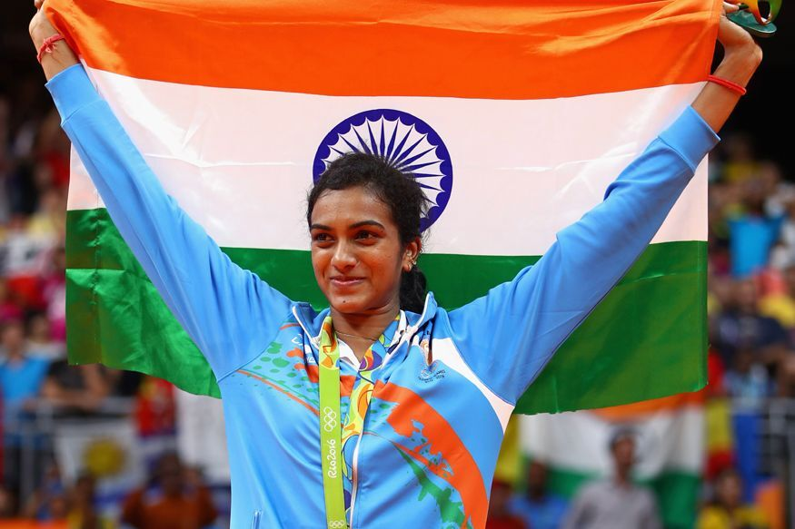

Olympics Athelets OF India
Olympic Records
| Mirabai Chanu |
Indian Hockey Team |
PV Sindhu |
Lovlina Borgohain |
Bajrang Punia |
Ravi Kum Dahiya |
Neeraj Chopra |
| Weight lifting |
Hockey Tournament |
Badminton |
Boxing |
Wrestling |
Wrestling |
Javelin |
| Silver |
Bronze |
Bronze |
Bronze |
Bronze |
Silver |
Gold |

Neeraj Chopra
Tokyo Olympic gold medallist javelin thrower Neeraj Chopra has decided to end his 2021 competition season due to a ‘packed schedule of travel and a bout of illness’
and vowed to comeback stronger in a busy 2022.

PV Sindhu
NEW DELHI: The only Indian woman to win two Olympic medals
With this win, Sindhu also becomes the first Indian female athlete to win two Olympic medals.
She is also technically only the third Indian athlete to win two individual Olympic medals

Indian Hockey Team
India's hockey team is the most successful team ever in the Olympics, having won eight gold medals in 1928, 1932, 1936, 1948, 1952, 1956, 1964 and 1980.
India also has the best overall performance in Olympic history with 83 victories out of the 134 matches played.